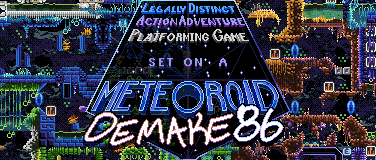
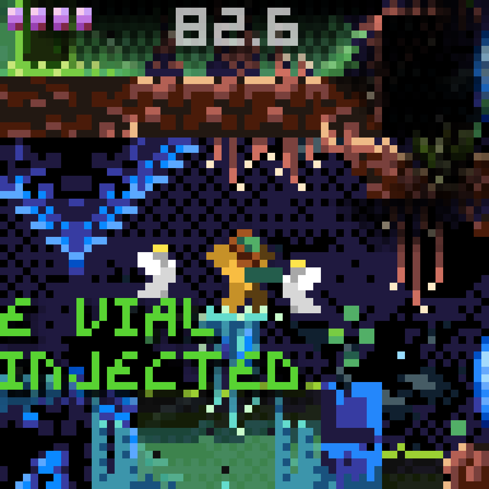
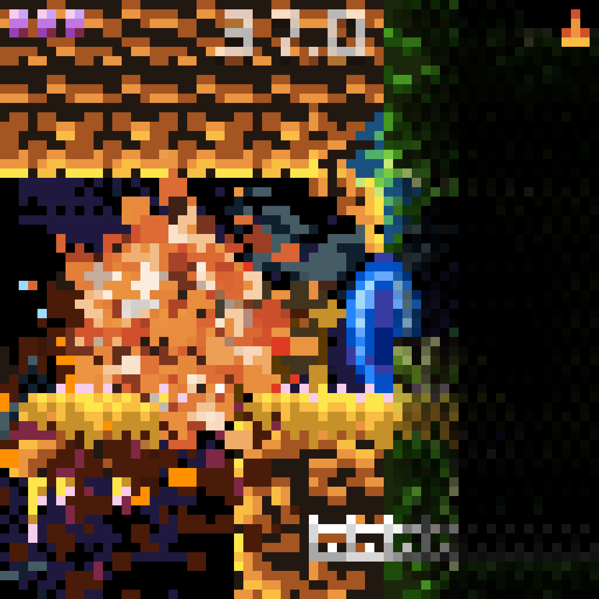
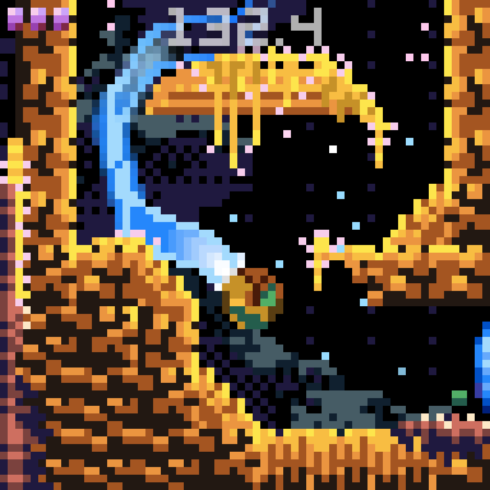

Demake86, or the Legally Distinct Action Adventure Platforming Game set on a Meteoroid, is a tiny Metroidvania which takes place in a 86 pixel meteoroid: 8×8 pixels per tile, 8×8 tiles per room, 8×8 rooms in the whole meteoroid. Can you beat it in 86 seconds?
While Demake86 is an homage to the genre-defining the 1986/8/6 release, Demake86 is a legally distinct and totally original game.
Demake86 released for free August 6th, 2026 in-browser on Itch.io!



THE MISSION:
You are Relan Gras, the legendary protector and sole inheritor of the now-extinct mysterious ancient Corvus species. Your purpose is to create a true peace in space. Many believe you to be a myth.
Orphaned as a child, you were saved and raised by the Corvus on Planet Zenith, a natural fortress planet blanketed in meteoroids. You travel the galaxy at light-speed, cursed by relativity to live a solitary life, dedicating your life to ending intergalactic threats as they arise.
You've just received a emergency transmission: The intergalactic paramilitary bandit ring known as the Neolegion have unearthed the ancient parasitic life-form known as SETONA, discovered in the labyrinthine fortress-ruins of the largest Meteoroid in the orbit of your homeworld.
The transmission suggests the Neolegion base is hosted by their ringleader, the mechanical life-vein known as the Minister Baroness. She is joined by the corpulent cave-dwelling monster Kemp and Relan's personal nemesis, the genocidal fire-breathing Reagan.
If the Neolegion were to tame the Setona, the shadow of their imperial rule would cover all of intergalactic society. You never expected your work would bring you home. ?
You never expected you'd ever return to your homeworld, let alone to find an existential threat brewing in your own backyard. Do you have what it takes to quell the evil which waits below the surface?
Credits: Created with absolutely no AI. All assets and code created from scratch by opossumcarrion, except for (1) a public domain skull, (2) a public domain recording of propaganda narrated by Ronald Reagan in 1986, (3) Androidarts' fantastic Famicube palette, (4) ending line work by artist Rae Whiteley.
- play Demake86
-
- follow the dev (opossumcarrion, that's me!)
- join the community:
 @carrion.0xpossum.dev
@carrion.0xpossum.dev
2026 Oct 25th
Open source! Sorry it took so long. Check out the repository, and read the devlog about it here.
2026 Aug 6th
Demake86 has been released! After years of work, most of which during the past ten months, I am excited to finally share this with you.
Updated 2026 Aug 4th
EMERGENCY TRANSMISSION: Meteoroid project "Demake86" is nearing the final stages of completion.
This project has been a labor of love, and I've put real blood, sweat, and tears into this. Making videogames is an injurious soulbreaking process.
Some features and goals, like a settings menu or certain secrets, are things I will relegate to "post launch" content, if there is interest! For now, I am eager to release as-is.
The game is content complete, and playtesters have been giving me very useful feedback.
Updated 2026 Apr 30th
Demake86 has been developed by Opossumcarrion (me!) since late 2024 in the Godot engine and will be open source after release, running in your browser. Demake86 is developed using absolutely no AI at any point for any part of development, including supplemental materials (like this site!)
Demake86 is not affiliated in any way with Nintendo.
PLAYER:
LEVEL DESIGN:
LEVEL ART:
VISUAL AND AUDITORY FLAIR:
BOSSES:
MUSIC: I'm not a musician! I'm trying!
ENEMIES:
MENUS: Call it post-release content!
TIE-IN MEDIA (like this site!) Instruction manual coming if there's demand
The last 20% that took 80% of the time:
Site made with Jdan's lovely 98.css